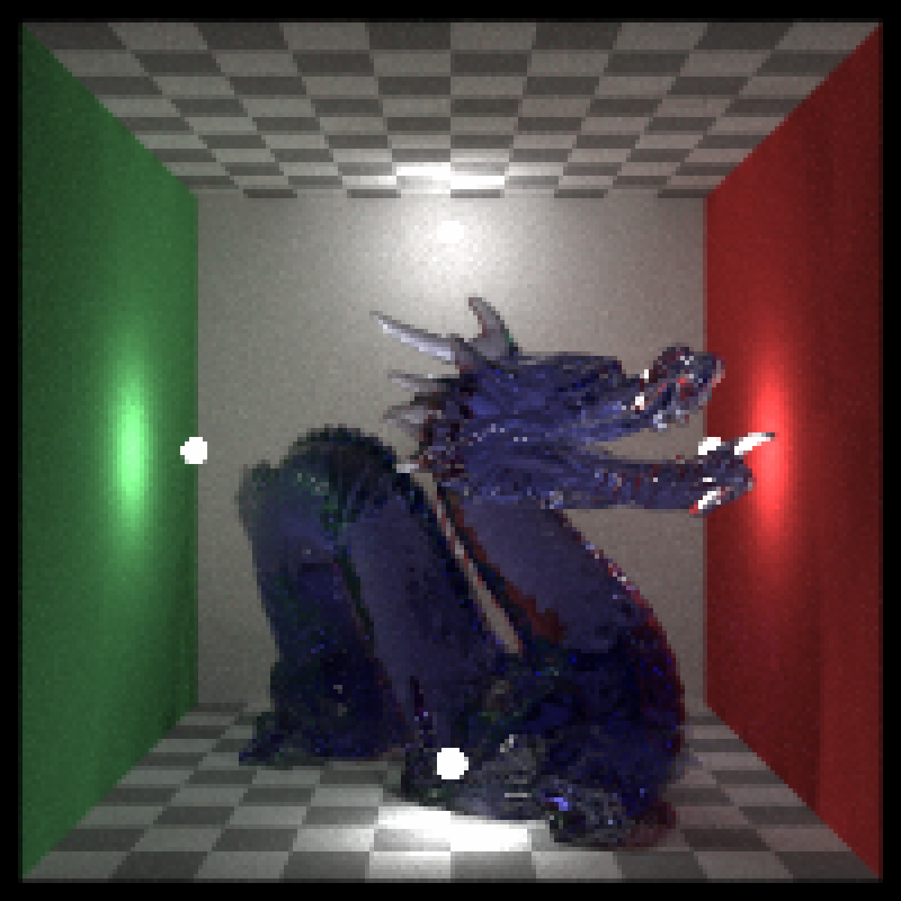
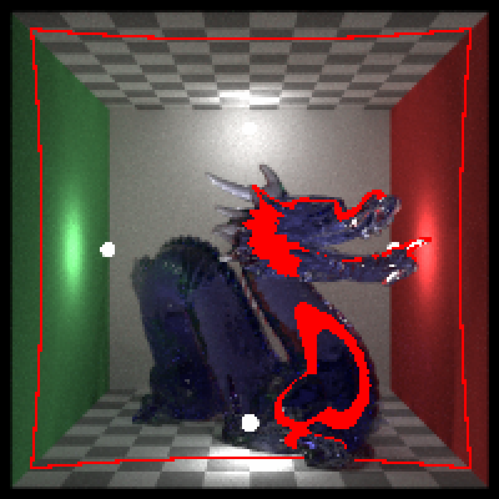
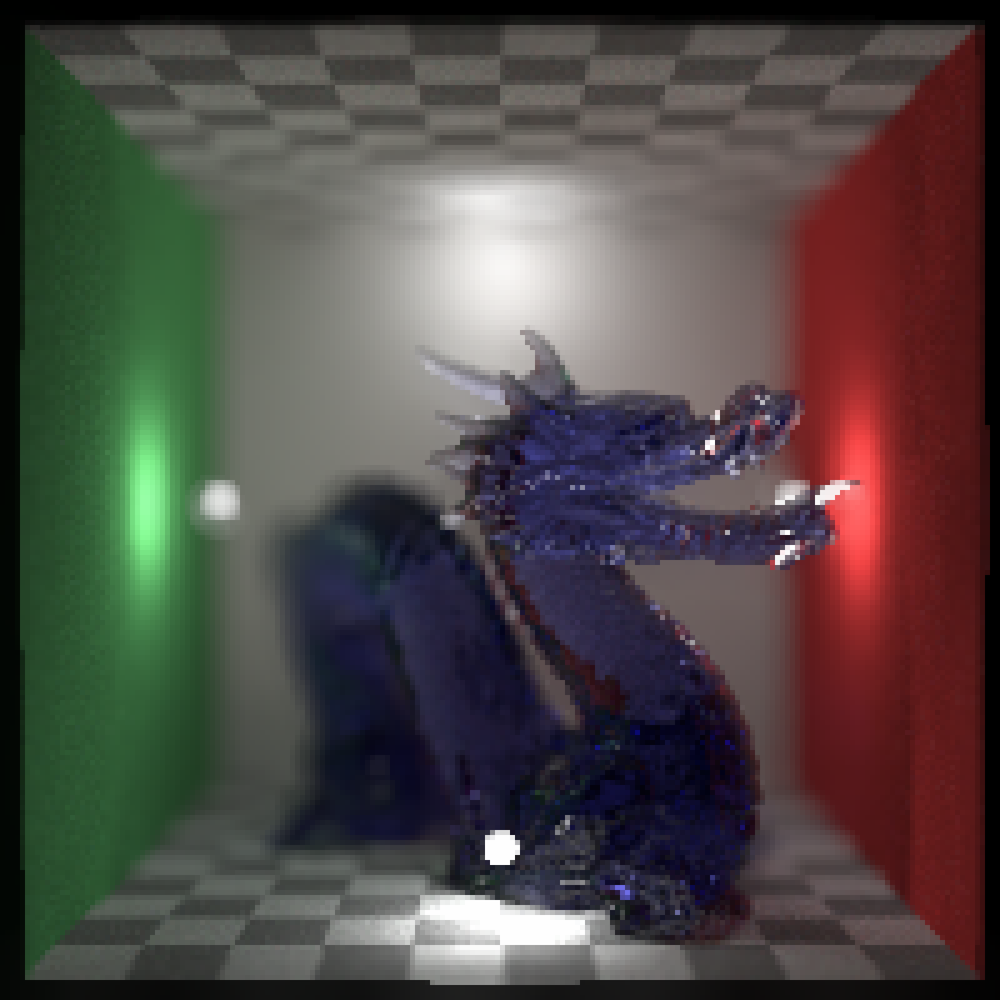
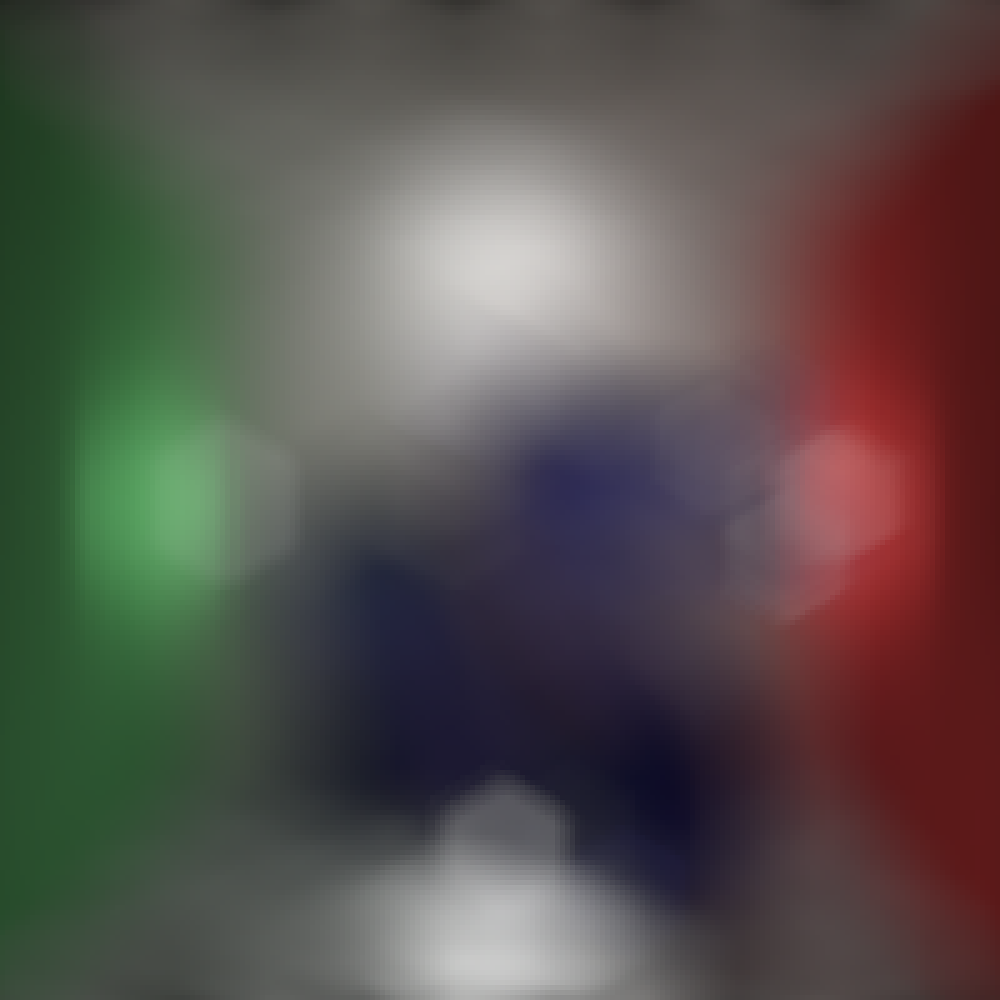
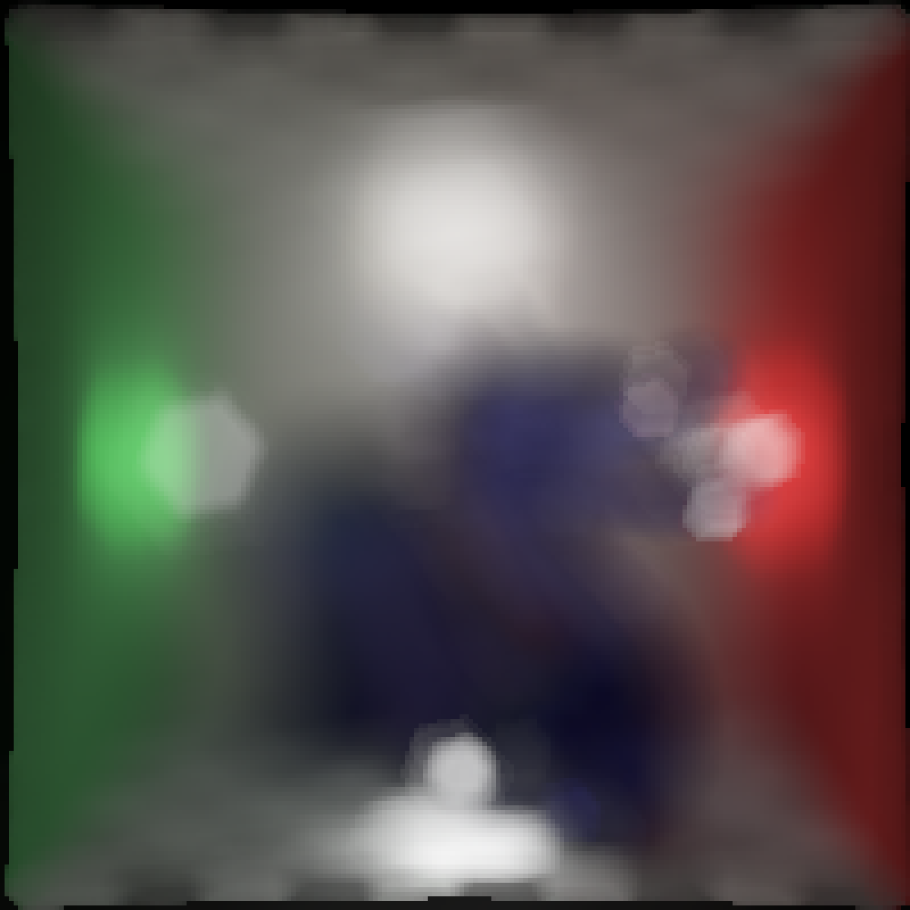
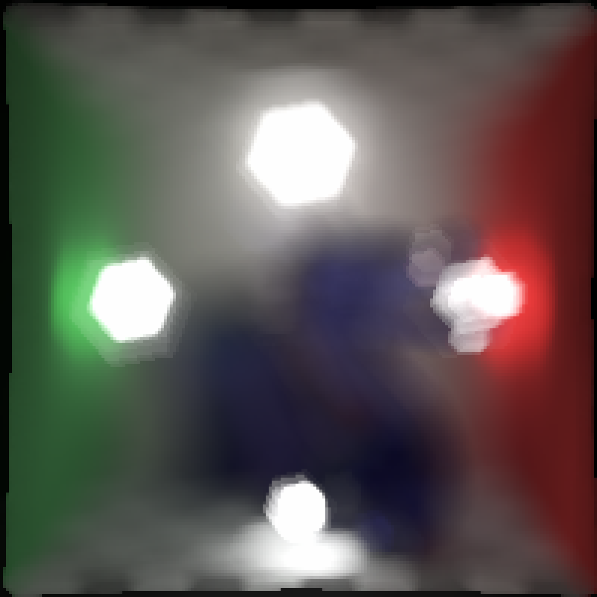

Takes an image and a depth map to render the image with depth of field (i.e. similar to "Portrait Mode" in an iPhone). User can specify a custom bokeh shape, or use one of the built-in bokeh types.
render_bokeh( image, depthmap, focus = 0.5, focallength = 100, fstop = 4, filename = NULL, preview = TRUE, preview_focus = FALSE, bokehshape = "circle", bokehintensity = 1, bokehlimit = 0.8, rotation = 0, aberration = 0, gamma_correction = TRUE, progress = interactive() )
Arguments
| image | Image filename or 3-layer RGB array. |
|---|---|
| depthmap | Depth map filename or 1d array. |
| focus | Defaults |
| focallength | Default |
| fstop | Default |
| filename | Default |
| preview | Default |
| preview_focus | Default |
| bokehshape | Default |
| bokehintensity | Default |
| bokehlimit | Default |
| rotation | Default |
| aberration | Default |
| gamma_correction | Default |
| progress | Default |
Value
3-layer RGB array of the processed image.
Examples
#Preview the focal plane: # \donttest{ render_bokeh(dragon, dragondepth, focus=950, preview_focus = TRUE)#># } #Change the focal length: # \donttest{ render_bokeh(dragon, dragondepth, focus=950, focallength=300)# } #Add chromatic aberration: # \donttest{ render_bokeh(dragon, dragondepth, focus=950, focallength=300, aberration = 0.5)# } #Change the focal distance: # \donttest{ render_bokeh(dragon, dragondepth, focus=600, focallength=300)render_bokeh(dragon, dragondepth, focus=1300, focallength=300)# } #Change the bokeh shape to a hexagon: # \donttest{ render_bokeh(dragon, dragondepth, bokehshape = "hex", focallength=300, focus=600)# } #Change the bokeh intensity: # \donttest{ render_bokeh(dragon, dragondepth, focallength=400, focus=900, bokehintensity = 1)render_bokeh(dragon, dragondepth, focallength=400, focus=900, bokehintensity = 3)# } #Rotate the hexagonal shape: # \donttest{ render_bokeh(dragon, dragondepth, bokehshape = "hex", rotation=15, focallength=300, focus=600)# }